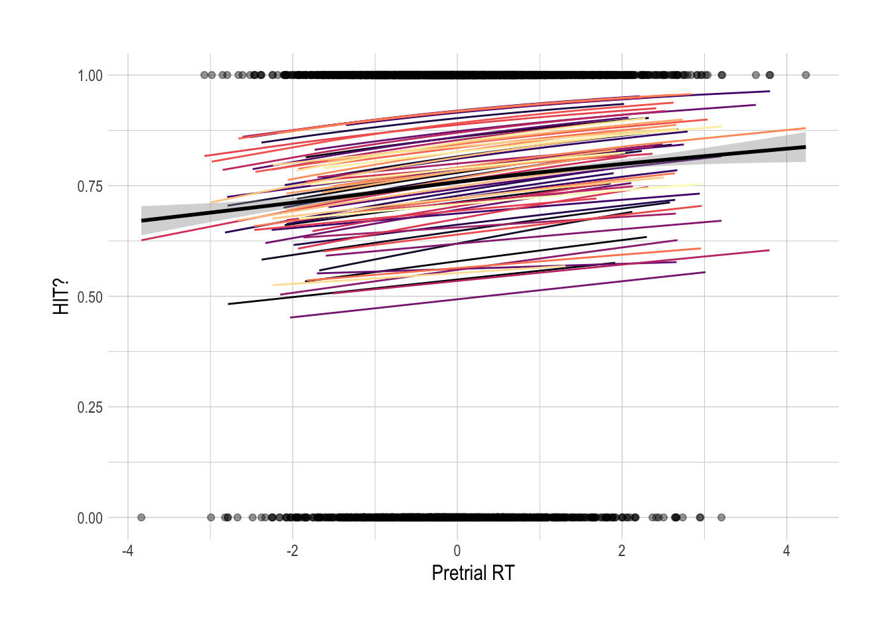

3 Whole-Data Analyses - Classic
This section includes analyses of sustained attention, recognition memory, and affective rating data from the encoding and retrieval components of the ‘classic’ version of the experiment described in ‘Experiments’. All participants from the sample were included in the following analyses. For analyses split by task performance or memory accuracy, see the ‘populations’ tab.
3.1 How often were participants lapsing on the task?
During the go/no-go task (encoding task), participants should have withheld a response when they saw a second presentation of the target image. A lapse occurs when they accidentally make a key press on one of these no-go target images. There were 50 target images shown during this task for each participant, so the maximum number of lapses is 50. Scroll through the table to see how often each participant made this mistake.
| Participant.Private.ID | total_lapses |
|---|---|
| 10773056 | 19 |
| 10775313 | 7 |
| 10776637 | 5 |
| 10776705 | 21 |
| 10777739 | 8 |
| 10778203 | 6 |
| 10778636 | 15 |
| 10778941 | 9 |
| 10780184 | 12 |
| 10780614 | 16 |
| 10780902 | 16 |
| 10780911 | 21 |
| 10780927 | 24 |
| 10780996 | 16 |
| 10781163 | 18 |
| 10782061 | 15 |
| 10782369 | 20 |
| 10782531 | 3 |
| 11328956 | 23 |
| 11328960 | 12 |
| 11329004 | 16 |
| 11329010 | 22 |
| 11329020 | 5 |
| 11329028 | 20 |
| 11329029 | 10 |
| 11329393 | 13 |
| 11330977 | 11 |
| 11330981 | 6 |
| 11330983 | 7 |
| 11331004 | 9 |
| 11331021 | 4 |
| 11331337 | 5 |
| 11331396 | 9 |
| 11331451 | 15 |
| 11331492 | 17 |
| 11344996 | 19 |
| 11345003 | 14 |
| 11345013 | 10 |
| 11345021 | 5 |
| 11345022 | 4 |
| 11345177 | 8 |
| 11345211 | 7 |
| 11345690 | 7 |
| 11345705 | 17 |
| 11345812 | 12 |
| 11346531 | 23 |
| 11346747 | 9 |
| 11348264 | 18 |
| 11416237 | 10 |
| 11416240 | 16 |
| 11416242 | 11 |
| 11416249 | 7 |
| 11416261 | 21 |
| 11416284 | 8 |
| 11416918 | 20 |
| 11455846 | 17 |
| 11455848 | 16 |
| 11455853 | 4 |
| 11455855 | 13 |
| 11455856 | 21 |
| 11455857 | 20 |
| 11455860 | 8 |
| 11456110 | 8 |
| 11456201 | 12 |
| 11456203 | 7 |
| 11456229 | 4 |
| 11456325 | 21 |
| 11456377 | 6 |
| 11456399 | 5 |
| 11456454 | 16 |
| 11456489 | 12 |
| 11456501 | 9 |
| 11456535 | 12 |
| 11456615 | 10 |
| 11456633 | 8 |
| 11456638 | 21 |
| 11456744 | 10 |
| 11456746 | 5 |
| 11456798 | 5 |
| 11456907 | 14 |
| 11456939 | 15 |
| 11457014 | 12 |
| 11457021 | 15 |
| 11457045 | 10 |
| 11457053 | 2 |
| 11457141 | 4 |
| 11457155 | 0 |
| 11457185 | 4 |
| 11457426 | 22 |
| 11497621 | 4 |
| 11497672 | 5 |
| 11497775 | 3 |
| 11498013 | 8 |
| 11498154 | 20 |
| 11498741 | 5 |
| 11525283 | 3 |
| 11525287 | 11 |
| 11525289 | 9 |
| 11525291 | 6 |
| 11525304 | 2 |
| 11525581 | 19 |
| 11525648 | 14 |
| 11525766 | 19 |
3.2 Does pretrial reaction time predict lapses?
The average reaction times (RTs) were linearly detrended within participant, mean reaction times were then calculated for the 3 images prior to a target (pretrial RT). In the below plot, I compare the preceding window RT for target images when the participant correctly withheld a response (correct) and when they lapsed during this task. We would expect that reaction times for the correct condition would be slower than for the lapse condition. This would indicate that participants are reacting habitually vs. reactively to the images when they lapse.
From this comparison, we see that, in general, reaction time IS slower for the correct vs. lapse conditions, which is in line with prior findings.

3.3 Is memory above chance?
During the retrieval task, participants were asked to rate their memory of target images (and 50 memory lures) on a scale of 1 (sure old) - 6 (sure new). To ensure data quality for the later analyses which included participant memory data, I first checked that each participant’s memory was above chance.
I also took a look at the distributions of memory performance,
using both d’ and A’prime’ as measures of performance. In both cases,
it’s apparent that there are a ton of participants that are hovering
just above chance. In the ‘populations’ section of this bookdown, I
explore whether these ‘worse memory’ participants (under median) produce
significantly different results than the ‘better memory’ participants.
Memory Performance Plots

3.4 Is pretrial RT predictive of memory?
An item is considered to be accurately remembered (‘hit’) when a participant responded with a 1-3 on the memory rating task to the target. Responses of 3 or lower were therefore taken to be a ‘hit’ and responses of 4 or higher were calculated as a ‘miss’. Below, I plot the participant-specific predictions of image recognition using a mixed effect logistic regression model with just pretrial reaction time as a predictor. This model included random slopes and intercepts for each participant and predicted memory using a binomial method. Values of 1 on the y axis represent a ‘hit’ while 0 represents a ‘miss’.
Overall, there is a positive relationship between pretrial reaction time and memory. This could indicate that participants that are in a better attentional state prior to viewing a target (positive values on x axis) are more likely to correctly remember that target later on( higher values on y axis).

Formula and Model Output
Model Formula: {\[
\text{hit} \sim \text{(Reaction Time} + \text{(1+Reaction Time|Participant)} \text{, family="binomial")}
\]}
| hits | ||
|---|---|---|
| Predictors | Odds Ratios | p |
| (Intercept) | 3.18 | <0.001 |
| zrt | 1.09 | 0.026 |
| N Participant.Private.ID | 95 | |
| Marginal R2 / Conditional R2 | 0.002 / 0.153 | |
3.5 Is memorability predictive of memory?
A similar analysis to above was conducted, using memorability (from VAMOS) as a sole predictor of a ‘hit’ in the memory task for each individual. For this analysis, memorability score was z-scored globally. Random intercepts were included in this mixed model, as each participant may have different baseline memory. However, memorability was assumed to impact participants (more or less) equally, so no random slopes were included.
One would expect that images that are more memorable across people will also be more memorable for each individual. We find that, indeed, more memorable images (positive values on x axis) are associated with better memory (higher values on y axis).

Formula and Model Output
Model Formula: \[ \text{hit} \sim \text{(Memorability} + \text{(1+Memorability|Participant)} \text{, family="binomial")} \]
| hits | ||
|---|---|---|
| Predictors | Odds Ratios | p |
| (Intercept) | 3.21 | <0.001 |
| z mem | 1.22 | <0.001 |
| N Participant.Private.ID | 95 | |
| Marginal R2 / Conditional R2 | 0.010 / 0.176 | |
3.6 Is Valence Predictive of Memory?
I was also interested in exploring how valence would predict image recognition in a model where it was the sole predictor. However, this time I created 3 versions of this model:classic (VAMOS), individual rating, and average rating versions.
classic (VAMOS): This version of the model uses VAMOS-derived scores of valence. It does NOT come from ratings of valence in the current experiment. Thus, the predictor variable is not z-scored within individual. Rather, it is z-scored globally. In the model formula, only random intercepts were specified, as it was assumed that the valence ratings from the VAMOS set can be used as ‘objective’ object properties. Though, I’m definitely open to pushback on this.
individual rating: This version of the model uses ratings of valence supplied from participants in the current experiment. Because each participant will have rated valence differently for any given image, each image has a valence rating for each participant in the study. This variable was then z-scored within-participant. Both random slopes and intercepts were included in the model.
average rating: This version of the model uses averaged participant ratings of valence from the current experiment. Each image has a single valence score which is the mean of all ratings for that image. This variable was then z-scored within-group for the two experimental conditions. Both random slopes and intercepts were included in the model, though I’m really not sure if this was the correct way to do it.
Predictions of memory for each of these versions of the model can be found below, along with their model formulas and model outputs. The results are consistent across all versions. For VAMOS ratings, individual ratings, or averaged ratings, positive images were more memorable than negative images.
Results

Formula and Model Output
Model Formula: \[ \text{hit} \sim \text{(Valence} + \text{(1 + Valence| Participant)} \text{, family="binomial")} \]
| hits | ||
|---|---|---|
| Predictors | Odds Ratios | p |
| (Intercept) | 3.19 | <0.001 |
| zv | 1.12 | 0.005 |
| N Participant.Private.ID | 95 | |
| Marginal R2 / Conditional R2 | 0.003 / 0.169 | |

Formula and Model Output
Model Formula: \[ \text{hit} \sim \text{(Valence} + \text{(1+Valence| Participant)} \text{, family="binomial")} \]
| hits | ||
|---|---|---|
| Predictors | Odds Ratios | p |
| (Intercept) | 3.18 | <0.001 |
| z ind | 1.13 | 0.009 |
| N Participant.Private.ID | 95 | |
| Marginal R2 / Conditional R2 | 0.003 / 0.169 | |
Formula and Model Output
Model Formula: \[ \text{hit} \sim \text{(Valence} + \text{(1+Valence| Participant)} \text{, family="binomial")} \]
| hits | ||
|---|---|---|
| Predictors | Odds Ratios | p |
| (Intercept) | 3.18 | <0.001 |
| group scale v | 1.11 | 0.022 |
| N Participant.Private.ID | 95 | |
| Marginal R2 / Conditional R2 | 0.003 / 0.168 | |
3.7 Is Arousal Predictive of Memory?
For completeness, I also conducted 3 versions of a model predicting memory using just arousal: classic (VAMOS), individual rating, and average rating versions.
classic (VAMOS): This version of the model uses VAMOS-derived scores of varousal. It does NOT come from ratings of arousal in the current experiment. Thus, the predictor variable is not z-scored within individual. Rather, it is z-scored globally.
individual rating: This version of the model uses ratings of valence derived from the participants in the current experiment. Because each participant will have rated arousal differently for any given image, each image has an arousal rating for each participant in the study. This variable was then z-scored within-participant.
average rating: This version of the model uses averaged ratings of arousal from the current experiment. Each image has a single arousal score which is the mean of all ratings for that image. This variable was then z-scored within-group for the two experimental conditions.
Predictions of memory for each of these versions of the model can be found below, along with their model formulas and model outputs. The results are consistent across all versions. For VAMOS ratings, individual ratings, or averaged ratings, more arousing images were more memorable than less arousing images.
Results
Formula and Model Output
Model Formula: \[ \text{hit} \sim \text{(Arousal} + \text{(1 + Arousal | Participant)} \text{, family="binomial")} \]
| hits | ||
|---|---|---|
| Predictors | Odds Ratios | p |
| (Intercept) | 3.15 | <0.001 |
| za | 1.09 | 0.020 |
| N Participant.Private.ID | 95 | |
| Marginal R2 / Conditional R2 | 0.002 / NA | |
Formula and Model Output
Model Formula:
\[
\text{hit} \sim \text{(Arousal} + \text{(1 + Arousal| Participant)} \text{, family="binomial")}
\]
| hits | ||
|---|---|---|
| Predictors | Odds Ratios | p |
| (Intercept) | 3.18 | <0.001 |
| z ind | 1.10 | 0.015 |
| N Participant.Private.ID | 95 | |
| Marginal R2 / Conditional R2 | 0.003 / NA | |

Formula and Model Output
Model Formula:
\[ \text{hit} \sim \text{(Arousal} + \text{(1+Arousal|Participant)} \text{, family="binomial")} \]
| hits | ||
|---|---|---|
| Predictors | Odds Ratios | p |
| (Intercept) | 3.18 | <0.001 |
| group scale ar | 1.13 | 0.003 |
| N Participant.Private.ID | 95 | |
| Marginal R2 / Conditional R2 | 0.004 / 0.154 | |
3.8 Memory Prediction using Simultaneous Predictors in a Mixed Logistic Regression Model
Finally, I threw combinations of the 4 predictors (valence, arousal, attention, memorability) into a single model that was predictive of memory (binarized or on the 1-6 scale) to understand the simultaneous influence of affective ratings, memorability, and sustained attention on on subsequent memory. For these analyses, the VAMOS valence and arousal scores were used for the affective variables. Model formula and output for all of these trials can be found below.
For the majority of the outputs, the story is the same: valence, arousal, memorability, and attention all positively impact our memory. Images that are positive, arousing, and memorable are more likely to be remembered. Images that were see during a better attentional state were also better remembered. This pattern holds true for predicting binary memory and memory on a scale of 1-6. Most interactions were not significant. Occasionally, the memorability x arousal interaction became significant.
Models w/ random intercept only
\[ \text{hit} \sim \text{(Arousal} \cdot \text{Valence} \cdot \text{Reaction Time} \\ + \text{(1|Participant)} \text{, family="binomial")} \]
| hits | ||
|---|---|---|
| Predictors | Odds Ratios | p |
| (Intercept) | 3.19 | <0.001 |
| zrt | 1.08 | 0.033 |
| zv | 1.14 | 0.001 |
| za | 1.08 | 0.041 |
| zrt × zv | 0.98 | 0.551 |
| zrt × za | 1.01 | 0.886 |
| zv × za | 0.98 | 0.579 |
| (zrt × zv) × za | 1.01 | 0.672 |
| N Participant.Private.ID | 95 | |
| Marginal R2 / Conditional R2 | 0.007 / 0.158 | |
\[ \text{Response(1-6)} \sim \text{Arousal} \cdot \text{Valence} \cdot \text{Reaction Time} + (1|\text{Participant}) \]
| Response | ||
|---|---|---|
| Predictors | Estimates | p |
| (Intercept) | 2.35 | <0.001 |
| zrt | -0.06 | 0.017 |
| zv | -0.08 | 0.002 |
| za | -0.07 | 0.005 |
| zrt × zv | 0.01 | 0.759 |
| zrt × za | -0.00 | 0.890 |
| zv × za | 0.01 | 0.702 |
| (zrt × zv) × za | -0.00 | 0.852 |
| N Participant.Private.ID | 95 | |
| Marginal R2 / Conditional R2 | 0.005 / 0.138 | |
\[ \text{hit} \sim \text{(Memorability} \cdot \text{Valence} \cdot \text{Reaction Time} \\ + \text{(1|Participant)} \text{, family="binomial")} \]
| hits | ||
|---|---|---|
| Predictors | Odds Ratios | p |
| (Intercept) | 3.24 | <0.001 |
| zrt | 1.09 | 0.023 |
| zv | 1.18 | <0.001 |
| z mem | 1.23 | <0.001 |
| zrt × zv | 0.99 | 0.773 |
| zrt × z mem | 0.99 | 0.760 |
| zv × z mem | 1.03 | 0.370 |
| (zrt × zv) × z mem | 1.06 | 0.115 |
| N Participant.Private.ID | 95 | |
| Marginal R2 / Conditional R2 | 0.017 / 0.169 | |
\[ \text{hit} \sim \text{(Memorability} \cdot \text{Arousal} \cdot \text{Reaction Time} \\ + \text{(1|Participant)} \text{, family="binomial")} \]
| hits | ||
|---|---|---|
| Predictors | Odds Ratios | p |
| (Intercept) | 3.18 | <0.001 |
| zrt | 1.07 | 0.064 |
| za | 1.09 | 0.023 |
| z mem | 1.20 | <0.001 |
| zrt × za | 1.01 | 0.867 |
| zrt × z mem | 0.99 | 0.835 |
| za × z mem | 1.11 | 0.011 |
| (zrt × za) × z mem | 1.05 | 0.231 |
| N Participant.Private.ID | 95 | |
| Marginal R2 / Conditional R2 | 0.015 / 0.166 | |
\[ \text{hit} \sim \text{Memorability} + \text{Arousal} + \text{Reaction Time} + \text{Valence}, + \\ \text{(1|Participant),}\\ \text{ family="binomial"} \]
| hits | ||
|---|---|---|
| Predictors | Odds Ratios | p |
| (Intercept) | 3.23 | <0.001 |
| zrt | 1.08 | 0.039 |
| za | 1.07 | 0.049 |
| z mem | 1.23 | <0.001 |
| zv | 1.17 | <0.001 |
| N Participant.Private.ID | 95 | |
| Marginal R2 / Conditional R2 | 0.018 / 0.169 | |
Models w/ Random intercept and slope
Additive models
\[ \text{hit} \sim \text{(Arousal} + \text{Valence} + \text{Reaction Time} \\ + \text{(1+Valence+Arousal|Participant)} \text{, family="binomial")} \]
| hits | ||
|---|---|---|
| Predictors | Odds Ratios | p |
| (Intercept) | 3.24 | <0.001 |
| zrt | 1.08 | 0.033 |
| zv | 1.14 | 0.003 |
| za | 1.09 | 0.018 |
| N Participant.Private.ID | 95 | |
| Marginal R2 / Conditional R2 | 0.008 / 0.169 | |
\[ \text{Response(1-6)} \sim \text{Arousal} + \text{Valence} + \text{Reaction Time} \\ + \left(1 + \text{Valence} + \text{Arousal} \mid \text{Participant}\right) \]
| Response | ||
|---|---|---|
| Predictors | Estimates | p |
| (Intercept) | 2.35 | <0.001 |
| zrt | -0.05 | 0.019 |
| zv | -0.07 | 0.009 |
| za | -0.07 | 0.002 |
| N Participant.Private.ID | 95 | |
| Marginal R2 / Conditional R2 | 0.005 / 0.146 | |
\[ \text{hit} \sim \text{(Memorability} + \text{Valence} + \text{Reaction Time} \\ + \text{(1+Valence|Participant)} \text{, family="binomial")} \]
| hits | ||
|---|---|---|
| Predictors | Odds Ratios | p |
| (Intercept) | 3.26 | <0.001 |
| zrt | 1.08 | 0.042 |
| zv | 1.17 | <0.001 |
| z mem | 1.24 | <0.001 |
| N Participant.Private.ID | 95 | |
| Marginal R2 / Conditional R2 | 0.016 / 0.176 | |
\[ \text{hit} \sim \text{(Memorability} + \text{Arousal} + \text{Reaction Time} \\ + \text{(1+Arousal|Participant)} \text{, family="binomial")} \]
| hits | ||
|---|---|---|
| Predictors | Odds Ratios | p |
| (Intercept) | 3.20 | <0.001 |
| zrt | 1.07 | 0.047 |
| za | 1.07 | 0.059 |
| z mem | 1.20 | <0.001 |
| N Participant.Private.ID | 95 | |
| Marginal R2 / Conditional R2 | 0.014 / NA | |
Interactive Models
\[ \text{hit} \sim \text{(Arousal} \cdot \text{Valence} \cdot \text{Reaction Time} \\ + \text{(1+Valence+Arousal|Participant)} \text{, family="binomial")} \]
| hits | ||
|---|---|---|
| Predictors | Odds Ratios | p |
| (Intercept) | 3.24 | <0.001 |
| zrt | 1.08 | 0.036 |
| zv | 1.15 | 0.003 |
| za | 1.08 | 0.062 |
| zrt × zv | 0.98 | 0.570 |
| zrt × za | 1.01 | 0.889 |
| zv × za | 0.98 | 0.481 |
| (zrt × zv) × za | 1.01 | 0.696 |
| N Participant.Private.ID | 95 | |
| Marginal R2 / Conditional R2 | 0.008 / 0.169 | |
\[ \text{Response(1-6)} \sim \text{Arousal} \cdot \text{Valence} \cdot \text{Reaction Time} \\ + \left(1 + \text{Valence} + \text{Arousal} \mid \text{Participant}\right) \]
| Response | ||
|---|---|---|
| Predictors | Estimates | p |
| (Intercept) | 2.35 | <0.001 |
| zrt | -0.05 | 0.020 |
| zv | -0.08 | 0.008 |
| za | -0.07 | 0.010 |
| zrt × zv | 0.01 | 0.748 |
| zrt × za | -0.00 | 0.905 |
| zv × za | 0.01 | 0.519 |
| (zrt × zv) × za | -0.00 | 0.850 |
| N Participant.Private.ID | 95 | |
| Marginal R2 / Conditional R2 | 0.005 / NA | |
\[ \text{hit} \sim \text{(Memorability} \cdot \text{Valence} \cdot \text{Reaction Time} \\ + \text{(1+Valence|Participant)} \text{, family="binomial")} \]
| hits | ||
|---|---|---|
| Predictors | Odds Ratios | p |
| (Intercept) | 3.28 | <0.001 |
| zrt | 1.08 | 0.026 |
| zv | 1.18 | <0.001 |
| z mem | 1.23 | <0.001 |
| zrt × zv | 0.99 | 0.777 |
| zrt × z mem | 0.99 | 0.775 |
| zv × z mem | 1.03 | 0.476 |
| (zrt × zv) × z mem | 1.06 | 0.121 |
| N Participant.Private.ID | 95 | |
| Marginal R2 / Conditional R2 | 0.017 / 0.177 | |
\[ \text{hit} \sim \text{(Memorability} \cdot \text{Arousal} \cdot \text{Reaction Time} \\ + \text{(1+Arousal|Participant)} \text{, family="binomial")} \]
| hits | ||
|---|---|---|
| Predictors | Odds Ratios | p |
| (Intercept) | 3.18 | <0.001 |
| zrt | 1.07 | 0.064 |
| za | 1.09 | 0.033 |
| z mem | 1.20 | <0.001 |
| zrt × za | 1.01 | 0.867 |
| zrt × z mem | 0.99 | 0.836 |
| za × z mem | 1.11 | 0.011 |
| (zrt × za) × z mem | 1.05 | 0.231 |
| N Participant.Private.ID | 95 | |
| Marginal R2 / Conditional R2 | 0.015 / 0.166 | |
\[ \text{hit} \sim \text{Memorability} \cdot \text{Arousal} \cdot \text{Reaction Time} + \\ \text{(1+ Reaction Time|Participant),} \text{ family="binomial"} \]
| hits | ||
|---|---|---|
| Predictors | Odds Ratios | p |
| (Intercept) | 3.19 | <0.001 |
| z mem | 1.20 | <0.001 |
| za | 1.09 | 0.022 |
| zrt | 1.08 | 0.040 |
| z mem × za | 1.11 | 0.010 |
| z mem × zrt | 0.99 | 0.878 |
| za × zrt | 1.01 | 0.829 |
| (z mem × za) × zrt | 1.05 | 0.228 |
| N Participant.Private.ID | 95 | |
| Marginal R2 / Conditional R2 | 0.016 / 0.168 | |
\[ \text{hit} \sim \text{Memorability} \cdot \text{Valence} \cdot \text{Reaction Time} + \\ \text{(1+ Reaction Time|Participant),} \text{ family="binomial"} \]
| hits | ||
|---|---|---|
| Predictors | Odds Ratios | p |
| (Intercept) | 3.25 | <0.001 |
| z mem | 1.23 | <0.001 |
| zv | 1.18 | <0.001 |
| zrt | 1.10 | 0.015 |
| z mem × zv | 1.03 | 0.366 |
| z mem × zrt | 0.99 | 0.801 |
| zv × zrt | 0.99 | 0.814 |
| (z mem × zv) × zrt | 1.06 | 0.106 |
| N Participant.Private.ID | 95 | |
| Marginal R2 / Conditional R2 | 0.018 / 0.171 | |
\[ \text{hit} \sim \text{Memorability} \cdot \text{Arousal} \cdot \text{Reaction Time} \cdot \text{Valence} + \text{1 + Reaction Time}, \text{ family="binomial"} \]
| hits | ||
|---|---|---|
| Predictors | Odds Ratios | p |
| (Intercept) | 3.26 | <0.001 |
| z mem | 1.24 | <0.001 |
| zv | 1.21 | <0.001 |
| zrt | 1.10 | 0.017 |
| za | 1.04 | 0.383 |
| z mem × zv | 1.07 | 0.110 |
| z mem × zrt | 0.99 | 0.842 |
| zv × zrt | 0.99 | 0.863 |
| z mem × za | 1.08 | 0.083 |
| zv × za | 0.95 | 0.202 |
| zrt × za | 1.00 | 0.994 |
| (z mem × zv) × zrt | 1.08 | 0.073 |
| (z mem × zv) × za | 0.90 | 0.009 |
| (z mem × zrt) × za | 1.03 | 0.440 |
| (zv × zrt) × za | 1.01 | 0.829 |
| (z mem × zv × zrt) × za | 0.95 | 0.184 |
| N Participant.Private.ID | 95 | |
| Marginal R2 / Conditional R2 | 0.026 / 0.178 | |
Special models
\[ \text{hit} \sim \text{Memorability} + \text{Arousal} + \text{Reaction Time} + \text{(Memorability} \cdot \text{Reaction Time)} + \text{(Memorability} \cdot \text{Arousal)}, \text{ family="binomial"} \]
| hits | ||
|---|---|---|
| Predictors | Odds Ratios | p |
| (Intercept) | 2.81 | <0.001 |
| zrt | 1.07 | 0.058 |
| za | 1.08 | 0.032 |
| z mem | 1.18 | <0.001 |
| zrt × z mem | 0.99 | 0.725 |
| za × z mem | 1.10 | 0.010 |
| R2 Tjur | 0.008 | |
<style=” text-align:center; vertical-align: middle; padding:40px 0;“> \[ \text{hit} \sim \text{Memorability} \cdot \text{Valence} \cdot \text{Reaction Time} \cdot \text{Arousal}+ \\ \text{(1+ Reaction Time+ Valence+Arousal+Memorability|Participant),} \text{ family="binomial"} \]
| hits | ||
|---|---|---|
| Predictors | Odds Ratios | p |
| (Intercept) | 3.37 | <0.001 |
| z mem | 1.26 | <0.001 |
| zv | 1.22 | <0.001 |
| zrt | 1.10 | 0.017 |
| za | 1.04 | 0.379 |
| z mem × zv | 1.06 | 0.181 |
| z mem × zrt | 0.99 | 0.839 |
| zv × zrt | 1.00 | 0.922 |
| z mem × za | 1.09 | 0.053 |
| zv × za | 0.95 | 0.154 |
| zrt × za | 0.99 | 0.854 |
| (z mem × zv) × zrt | 1.08 | 0.052 |
| (z mem × zv) × za | 0.90 | 0.005 |
| (z mem × zrt) × za | 1.03 | 0.532 |
| (zv × zrt) × za | 1.01 | 0.852 |
| (z mem × zv × zrt) × za | 0.94 | 0.175 |
| N Participant.Private.ID | 95 | |
| Marginal R2 / Conditional R2 | 0.028 / 0.207 | |
The most complete of these models predicts memory as a function of 1) each of the 4 predictors and 2) the interactions between the main predictors. It also allows for random intercepts for each individual and randoms slopes given all 4 predictors. \(\text{hits} \sim \text{Memorability} \cdot \text{Arousal} \cdot \text{Valence} \cdot \text{Reaction Time} + (1 \text{ + Reaction Time} \\ \text{+Valence+Arousal+Memorability}\ \mid \text{Participant.Private.ID}), \text{family=binomial}\)
| hits | ||
|---|---|---|
| Predictors | Odds Ratios | p |
| (Intercept) | 3.35 | <0.001 |
| z mem | 1.26 | <0.001 |
| za | 1.04 | 0.402 |
| zrt | 1.10 | 0.017 |
| zv | 1.22 | <0.001 |
| z mem × za | 1.08 | 0.076 |
| z mem × zrt | 0.99 | 0.860 |
| za × zrt | 0.99 | 0.897 |
| z mem × zv | 1.06 | 0.180 |
| za × zv | 0.95 | 0.148 |
| zrt × zv | 1.00 | 0.912 |
| (z mem × za) × zrt | 1.03 | 0.570 |
| (z mem × za) × zv | 0.90 | 0.006 |
| (z mem × zrt) × zv | 1.08 | 0.057 |
| (za × zrt) × zv | 1.01 | 0.883 |
| (z mem × za × zrt) × zv | 0.95 | 0.185 |
| N Participant.Private.ID | 95 | |
| Marginal R2 / Conditional R2 | 0.034 / NA | |
From the many, many models in the above section, we see that the
interaction which is most often significant is that between arousal and
memorability. I explored this a bit more by creating a two way plot which displays the predicted memory of an image (memory of individuals) vs. the memorability of that
image (across-population memory) and split the plot into high and low arousing groups. Note that
the predicted memory comes from models with the formula:
\(\text{hits} \sim \text{Memorability} \cdot \text{Arousal} \cdot \text{Valence} \cdot \text{Reaction Time}+(1 \text{ + Reaction Time}\\ \text{+Valence+Arousal+Memorability}\ \mid \text{Participant}), \text{family=binomial}\).

Because the most complete model also showed that the interaction between memorability and arousal may be modulated by valence, I also created a three-way version of the above plot. Using the complete formula, predictions for individual memory were made. Then the predictions were separated into negative, positive, and neutral bins.The predicted memory for each image is plotted against the memorability of the image. The line colors represent the arousal groups (high/low). The plots below show the interaction between memorability and arousal influences on memory predictions for each valence bin.


3.8.1 How do these results compare when using VAMOS vs individual ratings of valence and arousal?
In the above analyses, VAMOS scores (group-averaged from a prior study) were used as an index of the affect that is evoked by an image. But one could imagine that the relationship between affect, memory, and the other predictors of memory may change if we use the ratings of valence and arousal which come from the same participants who completed the memory test or by using the group-averaged ratings from this collection of participants. Perhaps we may be able to find that the idiosyncratic or group-averaged ratings of valence and arousal may change how we might predict memory using regression models.
To investigate whether these rating differences would significantly affect the interactive model outputs, I ran a set interactive models in which individual ratings of valence and arousal were used as the ‘Valence’ and ‘Arousal’ terms. For z-scoring information, see the ‘individual rating’ subsection of 3.6.
Models using individual valence and arousal ratings
\[ \text{hits} \sim \text{Memorability} \cdot \text{Arousal} \cdot \text{Valence} \cdot \text{Reaction Time} + (1 + \text{Arousal} + \text{Valence} + \text{Reaction Time}\mid \text{Participant.Private.ID}), \text{family=binomial} \]
| hits | ||
|---|---|---|
| Predictors | Odds Ratios | p |
| (Intercept) | 3.34 | <0.001 |
| z mem | 1.25 | <0.001 |
| za | 1.08 | 0.094 |
| zv | 1.17 | 0.002 |
| zrt | 1.14 | 0.003 |
| z mem × za | 1.04 | 0.344 |
| z mem × zv | 1.06 | 0.164 |
| za × zv | 0.98 | 0.676 |
| z mem × zrt | 1.01 | 0.850 |
| za × zrt | 1.02 | 0.730 |
| zv × zrt | 1.01 | 0.836 |
| (z mem × za) × zv | 0.95 | 0.183 |
| (z mem × za) × zrt | 1.02 | 0.703 |
| (z mem × zv) × zrt | 1.05 | 0.286 |
| (za × zv) × zrt | 0.98 | 0.552 |
| (z mem × za × zv) × zrt | 1.06 | 0.159 |
| N Participant.Private.ID | 95 | |
| Marginal R2 / Conditional R2 | 0.031 / NA | |
\[ \text{hits} \sim \text{Memorability} \cdot \text{Arousal} \cdot \text{Valence} \cdot \text{Reaction Time} + (1 + \text{Arousal} + \text{Valence} \mid \text{Participant.Private.ID}), \text{family=binomial} \]
| hits | ||
|---|---|---|
| Predictors | Odds Ratios | p |
| (Intercept) | 3.33 | <0.001 |
| z mem | 1.25 | <0.001 |
| za | 1.08 | 0.093 |
| zv | 1.17 | 0.001 |
| zrt | 1.13 | 0.003 |
| z mem × za | 1.04 | 0.374 |
| z mem × zv | 1.06 | 0.168 |
| za × zv | 0.99 | 0.721 |
| z mem × zrt | 1.01 | 0.834 |
| za × zrt | 1.02 | 0.703 |
| zv × zrt | 1.01 | 0.863 |
| (z mem × za) × zv | 0.95 | 0.181 |
| (z mem × za) × zrt | 1.02 | 0.677 |
| (z mem × zv) × zrt | 1.05 | 0.307 |
| (za × zv) × zrt | 0.98 | 0.563 |
| (z mem × za × zv) × zrt | 1.06 | 0.156 |
| N Participant.Private.ID | 95 | |
| Marginal R2 / Conditional R2 | 0.025 / 0.180 | |
\[ \text{hits} \sim \text{Memorability} \cdot \text{Arousal} \cdot \text{Valence} \cdot \text{Reaction Time} + (1 \mid \text{Participant.Private.ID}), \text{family=binomial} \]
| hits | ||
|---|---|---|
| Predictors | Odds Ratios | p |
| (Intercept) | 3.29 | <0.001 |
| z mem | 1.25 | <0.001 |
| za | 1.07 | 0.127 |
| zv | 1.15 | 0.001 |
| zrt | 1.13 | 0.003 |
| z mem × za | 1.04 | 0.373 |
| z mem × zv | 1.06 | 0.160 |
| za × zv | 0.98 | 0.596 |
| z mem × zrt | 1.00 | 0.908 |
| za × zrt | 1.01 | 0.778 |
| zv × zrt | 1.00 | 0.931 |
| (z mem × za) × zv | 0.95 | 0.201 |
| (z mem × za) × zrt | 1.02 | 0.689 |
| (z mem × zv) × zrt | 1.04 | 0.331 |
| (za × zv) × zrt | 0.98 | 0.586 |
| (z mem × za × zv) × zrt | 1.06 | 0.160 |
| N Participant.Private.ID | 95 | |
| Marginal R2 / Conditional R2 | 0.024 / 0.166 | |
\[ \text{hits} \sim \text{Memorability} \cdot \text{Arousal} \cdot \text{Valence} \cdot \text{Reaction Time}, \text{family=binomial} \]
| hits | ||
|---|---|---|
| Predictors | Odds Ratios | p |
| (Intercept) | 2.93 | <0.001 |
| z mem | 1.22 | <0.001 |
| za | 1.05 | 0.187 |
| zv | 1.14 | 0.001 |
| zrt | 1.12 | 0.005 |
| z mem × za | 1.05 | 0.176 |
| z mem × zv | 1.04 | 0.272 |
| za × zv | 0.96 | 0.244 |
| z mem × zrt | 1.00 | 0.986 |
| za × zrt | 1.01 | 0.812 |
| zv × zrt | 0.99 | 0.888 |
| (z mem × za) × zv | 0.96 | 0.264 |
| (z mem × za) × zrt | 1.01 | 0.788 |
| (z mem × zv) × zrt | 1.03 | 0.551 |
| (za × zv) × zrt | 0.99 | 0.845 |
| (z mem × za × zv) × zrt | 1.05 | 0.195 |
| R2 Tjur | 0.014 | |
\[ \text{hits} \sim \text{Memorability} \cdot \text{Arousal} \cdot \text{Reaction Time} + (1 \mid \text{Participant.Private.ID}), \text{family=binomial} \]
| hits | ||
|---|---|---|
| Predictors | Odds Ratios | p |
| (Intercept) | 3.24 | <0.001 |
| z mem | 1.21 | <0.001 |
| za | 1.10 | 0.016 |
| zrt | 1.12 | 0.005 |
| z mem × za | 1.05 | 0.244 |
| z mem × zrt | 1.02 | 0.705 |
| za × zrt | 1.00 | 0.979 |
| (z mem × za) × zrt | 1.02 | 0.583 |
| N Participant.Private.ID | 95 | |
| Marginal R2 / Conditional R2 | 0.017 / 0.158 | |
\[ \text{hits} \sim \text{Memorability} \cdot \text{Valence} \cdot \text{Reaction Time} + (1 \mid \text{Participant.Private.ID}), \text{family=binomial} \]
| hits | ||
|---|---|---|
| Predictors | Odds Ratios | p |
| (Intercept) | 3.27 | <0.001 |
| z mem | 1.24 | <0.001 |
| zv | 1.15 | <0.001 |
| zrt | 1.13 | 0.002 |
| z mem × zv | 1.05 | 0.235 |
| z mem × zrt | 1.01 | 0.767 |
| zv × zrt | 1.00 | 0.948 |
| (z mem × zv) × zrt | 1.06 | 0.132 |
| N Participant.Private.ID | 95 | |
| Marginal R2 / Conditional R2 | 0.020 / 0.162 | |
Then, I ran a similar set of models using averaged participant ratings of valence/arousal from the ‘classic’ experiment as measures of valence and arousal. See the ‘average rating’ subsection of 3.6. for more information on z-scoring and averaging for this version.
Models using group-averaged valence and arousal ratings
\[ \text{hits} \sim \text{Memorability} \cdot \text{Arousal} \cdot \text{Valence} \cdot \text{Reaction Time} + (1 + \text{Arousal} + \text{Valence} + \text{Reaction Time}\mid \text{Participant.Private.ID}), \text{family=binomial} \]
| hits | ||
|---|---|---|
| Predictors | Odds Ratios | p |
| (Intercept) | 2.88 | <0.001 |
| z mem | 1.23 | <0.001 |
| za | 1.20 | <0.001 |
| zrt | 1.09 | 0.003 |
| z mem × za | 1.07 | <0.001 |
| za × zv | 1.02 | 0.397 |
| z mem × zrt | 1.01 | 0.738 |
| za × zrt | 1.00 | 0.925 |
| (z mem × za) × zv | 1.00 | 0.929 |
| (z mem × za) × zrt | 1.10 | <0.001 |
| (za × zv) × zrt | 1.03 | 0.190 |
| (z mem × za × zv) × zrt | 0.99 | 0.721 |
| R2 Tjur | 0.015 | |
\[ \text{hits} \sim \text{Memorability} \cdot \text{Arousal} \cdot \text{Valence} \cdot \text{Reaction Time} + (1 + \text{Arousal} + \text{Valence} \mid \text{Participant.Private.ID}), \text{family=binomial} \]
| hits | ||
|---|---|---|
| Predictors | Odds Ratios | p |
| (Intercept) | 3.63 | <0.001 |
| z mem | 1.26 | <0.001 |
| za | 1.25 | <0.001 |
| zrt | 1.09 | 0.007 |
| z mem × za | 1.05 | 0.017 |
| za × zv | 0.99 | 0.695 |
| z mem × zrt | 1.01 | 0.660 |
| za × zrt | 1.01 | 0.609 |
| z mem × za × zv | 1.00 | 0.848 |
| (z mem × za) × zrt | 1.11 | <0.001 |
| za × zv × zrt | 1.04 | 0.145 |
| z mem × za × zv × zrt | 1.00 | 0.926 |
| N Participant.Private.ID | 95 | |
| Marginal R2 / Conditional R2 | 0.027 / 0.254 | |
\[ \text{hits} \sim \text{Memorability} \cdot \text{Arousal} \cdot \text{Valence} \cdot \text{Reaction Time} + (1 \mid \text{Participant.Private.ID}), \text{family=binomial} \]
| hits | ||
|---|---|---|
| Predictors | Odds Ratios | p |
| (Intercept) | 3.29 | <0.001 |
| z mem | 1.25 | <0.001 |
| za | 1.07 | 0.127 |
| zv | 1.15 | 0.001 |
| zrt | 1.13 | 0.003 |
| z mem × za | 1.04 | 0.373 |
| z mem × zv | 1.06 | 0.160 |
| za × zv | 0.98 | 0.596 |
| z mem × zrt | 1.00 | 0.908 |
| za × zrt | 1.01 | 0.778 |
| zv × zrt | 1.00 | 0.931 |
| (z mem × za) × zv | 0.95 | 0.201 |
| (z mem × za) × zrt | 1.02 | 0.689 |
| (z mem × zv) × zrt | 1.04 | 0.331 |
| (za × zv) × zrt | 0.98 | 0.586 |
| (z mem × za × zv) × zrt | 1.06 | 0.160 |
| N Participant.Private.ID | 95 | |
| Marginal R2 / Conditional R2 | 0.024 / 0.166 | |
\[ \text{hits} \sim \text{Memorability} \cdot \text{Arousal} \cdot \text{Valence} \cdot \text{Reaction Time}, \text{family=binomial} \]
| hits | ||
|---|---|---|
| Predictors | Odds Ratios | p |
| (Intercept) | 2.93 | <0.001 |
| z mem | 1.22 | <0.001 |
| za | 1.05 | 0.187 |
| zv | 1.14 | 0.001 |
| zrt | 1.12 | 0.005 |
| z mem × za | 1.05 | 0.176 |
| z mem × zv | 1.04 | 0.272 |
| za × zv | 0.96 | 0.244 |
| z mem × zrt | 1.00 | 0.986 |
| za × zrt | 1.01 | 0.812 |
| zv × zrt | 0.99 | 0.888 |
| (z mem × za) × zv | 0.96 | 0.264 |
| (z mem × za) × zrt | 1.01 | 0.788 |
| (z mem × zv) × zrt | 1.03 | 0.551 |
| (za × zv) × zrt | 0.99 | 0.845 |
| (z mem × za × zv) × zrt | 1.05 | 0.195 |
| R2 Tjur | 0.014 | |
\[ \text{hits} \sim \text{Memorability} \cdot \text{Valence} \cdot \text{Reaction Time} + (1 \mid \text{Participant.Private.ID}), \text{family=binomial} \]
| hits | ||
|---|---|---|
| Predictors | Odds Ratios | p |
| (Intercept) | 3.27 | <0.001 |
| z mem | 1.24 | <0.001 |
| zv | 1.15 | <0.001 |
| zrt | 1.13 | 0.002 |
| z mem × zv | 1.05 | 0.235 |
| z mem × zrt | 1.01 | 0.767 |
| zv × zrt | 1.00 | 0.948 |
| (z mem × zv) × zrt | 1.06 | 0.132 |
| N Participant.Private.ID | 95 | |
| Marginal R2 / Conditional R2 | 0.020 / 0.162 | |